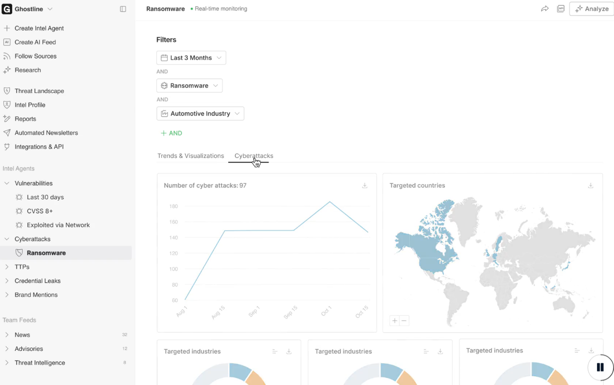

Veille informationnelle en cybersécurité
Contexte
Dans le cadre de mon alternance chez Cognacq-Jay Image, j’ai mis en place une veille informationnelle afin de suivre l’actualité cybersécurité, les vulnérabilités récentes et les menaces pouvant impacter les systèmes d’information.
Cette veille me permet également de compléter mon autoformation et de maintenir mes connaissances à jour dans les domaines du réseau, de l’administration système et de la sécurisation.
Objectifs
- Suivre les nouvelles failles de sécurité
- Identifier les vulnérabilités importantes
- Rester informé des menaces récentes
- Maintenir mes compétences techniques à jour
- Signaler les informations importantes à l’équipe IT
- Développer une démarche de veille régulière
Environnement technique
Travaux réalisés
Centralisation des sources
Utilisation de Feedly pour regrouper plusieurs sources d’information liées à la cybersécurité, aux vulnérabilités, aux attaques récentes et aux évolutions du domaine informatique.
Suivi des vulnérabilités
Consultation régulière des nouvelles failles afin de repérer les risques pouvant concerner les systèmes, les services ou les outils utilisés dans un environnement professionnel.
Analyse des menaces
Observation des tendances liées aux cyberattaques, notamment les ransomwares, les pays ciblés, les secteurs touchés et les vulnérabilités exploitées.
Partage d’informations
Les informations importantes peuvent être remontées à l’équipe IT lorsqu’une vulnérabilité ou une menace semble pertinente pour l’entreprise.
Preuve de veille
Tableau de bord Feedly / Ghostline
Exemple d’outil de veille utilisé pour suivre les tendances liées aux ransomwares, aux cyberattaques et aux secteurs ciblés.

Compétences développées
Compétences techniques
- Suivi des vulnérabilités et failles récentes
- Compréhension des risques liés aux cyberattaques
- Lecture d’informations techniques spécialisées
- Analyse de tendances cybersécurité
- Veille sur les outils et menaces actuelles
Compétences professionnelles
- Autonomie dans la recherche d’information
- Organisation d’une veille régulière
- Maintien à jour des connaissances
- Capacité à identifier les informations importantes
- Communication d’informations utiles à l’équipe
Résultats obtenus
Apports personnels
- Meilleure compréhension des menaces actuelles
- Montée en compétence en cybersécurité
- Suivi plus régulier de l’actualité informatique
- Renforcement de ma culture technique
Impact professionnel
Cette veille permet d’anticiper certains risques, de rester informé sur les failles récentes et d’être plus réactif lorsqu’une menace peut concerner l’environnement informatique de l’entreprise.
Bilan personnel
Cette activité m’a permis de développer une habitude de veille régulière et de mieux comprendre l’importance de rester informé dans le domaine de la cybersécurité. Elle complète mon autoformation et me permet de progresser continuellement.